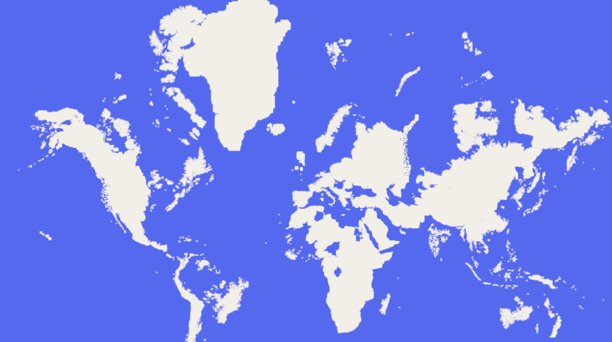
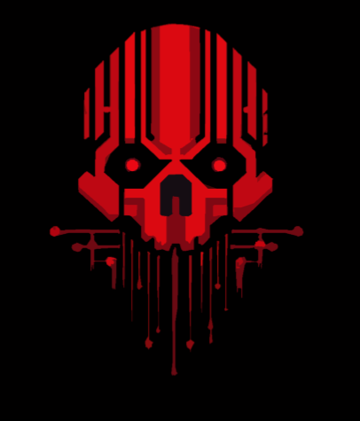

A Brief History on The Setting
How the world got to the way it is. If you know how cyberpunk usually operates, you can probably skip this.
Within 7 to 10 years of our current time, corporate officials, wealthy executives, and other members of the higher, more corrupt society of the world are able to use their wealth and resources to elect themselves into effectively every area of government processes across the globe. Under the flag of progress, these so-called politicians make decisions and pass laws serving to enrich their beneficiaries and parent companies, but at a severe environmental cost.
Over the next decade or so, the earth's climate will continue to degrade, with summers hitting record-breaking highs and winters hitting record-breaking lows year after year. The rapidly rising global temperature sees the ice caps melt at a rate never anticipated. During this period sea levels rise several inches every year, and world governments scramble to find ways to protect their major cities from flooding (no thanks to the corporations hidden among their ranks).
The combination of a widening wealth gap, and the huge effects climate change has had on cattle and crop yields causes widespread famine in the world's countries. This leads to a new refugee crisis when many people flee to the wealthier nations as their only chance for survival, causing overpopulation in these places from countries converging on themselves. Private companies flourish across every sector during this time as laws increased in favor of corporate ease and profitability.
Governments started collapsing after a large number of world leaders were assassinated within a year by a handful of different groups, some identified, some not. It is unknown whether or not the corporations orchestrated these assassinations. What is known however is that the corporations did then rise to massive power, filling the void of the now diminished governments, began construction of their cities, and resumed progress of their space programs, which had been sleeping projects due to the restrictions that they were unable to lift in the government's time of control. These involved the mining of other planets for resources, which were met with heavy opposition. Nonetheless, they managed to create the first fully functional colonies on Mars within a decade, and then the moons of Jupiter a few years later.
With their clean and pristine off-world colonies, the megacorporations became completely apathetic regarding the health of Earth's environment. The manufacturing and development limitations came off of them, with environmental restoration and mining reclamation becoming suspended. Even sanctuary locations, pivotal to the planet's health, were now open to unrestricted exploitation. Economies grew in leaps and bounds, but the resources were limited, and competition for them intensified. The planet's environmental collapse was now in full swing, with entire swathes of land becoming uninhabitable and inhospitable (and this was furthered by the toxic waste and genetic experiments the corporations dumped out into unpopulated areas). The sea levels rose by 30 ft. Basic seawalls and defenses were constructed early on, but by the end of this period things were dire. Rather than attempt to reverse, or at minimum slow climate change, the corporations chose instead to treat the symptoms. With the blessing of regional governing systems, the megacorporations constructed 200-foot-tall sea walls around the major cities in preparation for a worst case scenario, one they knew was coming by their own hand. Now free of government restrictions, and with the power of the colonies behind them, the megacorporations saw huge, almost unreal advancements in technology for the next many decades. Then one day, from deep within one of their off-world labs, a company developed the first ever artificial human, known as an android, profoundly changing the economic landscape. Some of these androids had biological bodies and all possessed incredibly complex AI, supported with vat grown bio components to allow for near-sentience. Most importantly for the megacorporations, these artificial humanoids also had no legal rights.
Eventually the chaos settled, and the world became used to the way things had changed. It's been a very, very long time since the megacorporations wrestled control away from the governments and shaped the world into a dystopian nightmare. The people of Earth rarely give much thought to the unreachable colonies and wars in the stars above. Many born within the past 50 years don't even remember the great corporate war that left a scar across the moon, visible whenever it hangs in the night sky. These events barely touch the lives of normal everyday people. Most people only have enough energy to care about their city and the tiny apartment they call home. Escape from reality is a key theme throughout the modern period. Billions of people live within the confines of huge sea walls, consumed as much by the shadows the walls cast as the poverty they were born into. These people rely on both illegal and legal drugs to get through each day, desperately searching for the next artificial high to settle their mind. The unemployed seek all forms of casual labor, even in highly technical industries, if they have the energy to work. The underground economy thrives, and criminal enterprise is rampant in the lower parts of every major city. Most people live a lifetime without ever seeing plant life or real animals aside from rodents. Work life is witness to corporate infighting and the totalitarian crackdown on any resistance. But within the shadows and crevasses between the corporate hierarchies the real struggle takes place. Corporate raiders and protesters fight the power that the megacorporations have over every aspect of life. Meanwhile the corporations have settled into their power much the way the governments they enslaved had, by initiating conflict with their peers. In this way the megacorps are constantly fighting a war on at least several fronts.
This is life, and it's normal. People do as they always do. They try to survive.

Moscow as a City
The city of Moscow in this universe has been a city, with its name unchanged, for more or less one thousand years at this point. Despite its position as a factory state for Orihia in the modern day, it remains a melting pot for all sorts of people. As someone who has lived within this city for at least a portion of your life, be it weeks or years, you know a bit about it, most notably its subsectors.
- The Citadel Precinct: Orihia's headquarters building and its immediate sprawl at the center of the city. A sky-piercing tower and concentric security rings. Everything here is sealed, climate-controlled, and vertically tiered by rank. Given the lack of an ozone layer around populated areas, the Citadel constantly generates a storm of smog around it that extends large enough to cast a perpetual cloud layer over the city, protecting it from the sun's effects. This "pollution storm" also doubles as a defensive mechanism, with complicated machinery at the top of the citadel capable of channeling electricity through it, whipping up powerful hurricanes and lightning storms above or surrounding the city to help protect it from invasion.
- The Entertainment Quarter: The only sector that does not enforce a curfew, this is the city's only legal "playground". Casinos, stadiums, night markets, gladiator pits and curated spectacles. General Tchesovsko, one of the Orihia Directorate Board, treats it as his private city within a city. Its most prominent structure is The Colossus, a spectacular tiered bloodsport arena with lesser fights running within its inner walls at all hours of the day. It is overlooked by the general's casino tower, with lavish parties and revelries held nightly, with the surrounding district illuminated by the kaleidoscope of fireworks and concert lights that launch from it every night.
- Foundry Wards: Massive weapon manufacturing complexes, plating yards, munitions dumps. Smells of ozone and molten alloy. Security is heavy on the production floors and lighter in the scrap alleys, but Orihia's patrols make any unauthorized movement dangerous. Shift quotas determine rations and housing status. Smuggling and side hustles are common. Foremen can elevate conditions or sell out for a promotion. Lots of folks don't have a home outside of the factories and cram into narrow, bunk-style living stacked in rows. Privacy is minimal, biometric shift locks enforce attendance, and ration dispensers are mandatory; losing access means eviction to the slum areas that cling around The Maw, the huge shredders and refineries that reduce battlefield wrecks back to ingots.
- Saprozona (Quarantine Zone): Heavily cordoned sector almost entirely overtaken by a fungal nanobiome. Orihia maintains it with brutal maintenance protocols and mobile containment scripts. Civilians are not allowed and barely know what's inside the place; the sector is an experimental buffer. Nightly fires are visible from the city's skyline coming from flame patrols within this sector. The residential blocks surrounding the quarantine zone are referred to as The Grey Fringe.
- The Archology: Headquarters for Orihia's dispersed corporate functions outside the Citadel: admin offices, datacenters, legal courts, investor towers. Clean, clinical, panopticon surveillance. You'll find the Stock Exchange here, in addition to the ration distribution and mandatory orientation centers. The city news runs out of this sector, and usually airs right after the Citadel's daily morning announcements.
- The Belt: Making up the entirety of the city's connection to the ocean, The Belt is pockmarked with railheads, river terminals, armored garages, and the informal economies that grease them. It's Orihia's supply artery and a ripe place for smuggling. Constant convoys and convoy ambush drills. Many who live here do so in converted container boxes that hug the massive seawall that keeps millions of gallons of water from spilling into the city. Either that, or you're growing gardens on floating barge-houses along the canals.
- New Moskova Ecologies: Engineered biospheres that produce food, synthetic air, and pharm plants. Also holds the most substantial amount of Orihia's worker blocks for the city's populace, all tightly scheduled and surveilled. Beyond the massive residential skyscrapers (which are most certainly overcrowded), at least a third of the district is covered in green domes that contain hydroponics, gene farms, and ration distribution centers. You can also find a good amount of clinic rings in this district.
- The Bastion: Buffer zone between Orihia Moscow and the wasteland. Harsh, militarized checkpoints, makeshift towns of those never accepted into the city core. A hotbed for smugglers and desperate entrepreneurs. The first thing someone approaching the city sees, either by train, plane, rocket, or on foot, is a wall, hundreds of feet high, with cannons perched along it that are even larger. The immediate wasteland within around ten miles of Moscow is a labyrinth of trenches that extend into tunnels a few hundred feet below ground. It's unlikely any of those trench tunnels lead to the sub-levels of the city, however, as the roots of the border wall run deep into the earth.
The Orihia Corporation

Orihia International Armaments is a megacorporation specializing in weapons manufacturing and private military contracting. As one of the largest weapons manufacturers in the world, Orihia's extensive catalog is used by hundreds of territories and its mercenary divisions partake in operations ranging from assassination to corporate security to full scale military operations. The company was founded by a joint partnership of multiple Japanese arms companies who approached a group of Russian arms companies, merging into one massive organization, which dropped the use of "conglomerate" from their name after a few years.
The Directorate Board
At the top of Orihia corporation are a number of powerful individuals who operate the company in conjunction with one another. None of them are just figureheads, and can just as easily kill a small army of assailants as quickly as some of the company's best fighters. Among these people are:
- Director Munehisa Dreykov: Arguably the most influential member of the board. A ruthless genius and religious man to some degree, Dreykov oversees a large amount of the training of new Orihia soldiers, particularly in their "reprogramming", to ensure total company loyalty. His primary lackey is Constant Auto.
- Director Ivo Hoplight: An eccentric member of The Board, often flanked by hovering drones of his own design in public appearances, Director Hoplight is the main mind overseeing weapons manufacturing in the company, and designs a number of destructive implements himself.
- Director Cassian Apus Pyxis Olierian: The newest directorate, and the only one to achieve his position via nepotism, Director Olierian has continued to remind the rest of the board that this fact is not the sole reason for his continued holding of the position. He has similar responsibilities as Hoplight, but was also the man to set up the Quarantine Zone in the city about three years ago after the failings of subordinates.
- Director Hirana Kishiyo: Usually abroad in other megacities, Director Kishiyo is the youngest on the board, and handles much of Orihia's dealings with other megacorporations. This more often than she would like places her near or around frontlines of conflicts where she has to negotiate with other megacorp clients on just how many units of Orihia's armies they want shipped out into the fray.
- General Kiril Tchesovsko: Kiril is the unofficial leader of Moscow's Entertainment Quarter and CEO-Commander of at least five mercenary subsidiaries in Orihia's catalogue. He dabbles in Earth's underworld just as much as the corporate side, and the rest of the board leaves him to his own devices for the most part, though he is known to cause them problems often from his antics.
- General Alessa Kinova: The CEO of TERMITE, General Kinova is the oldest member of the board, having been elevated to her position some ninety years ago after she finished construction of The Citadel for Orihia, and has since worked as the corporation's primary architect, and working in conjunction with many other directorates to handle the logistics of their projects.
The Constants
Constants are fully-augmented Orihia employees who operate directly under The Directorate Board as their primary messengers, enforcers, and judges. If a Constant gives an order, it is generally believed they speak on behalf of The Board, and as such they outrank every other unit in every possible way. The Constants currently operating in Moscow are:
- O.V.I.D.: While not technically a Constant, The Orihia Vigilant Intelligence Director (Ovid) is synonymous with Moscow's daily life, responsible for delivering the citadel's daily announcements and watching most of the CCTV around the city, and handling dispatch of troops to respond to situations on a wide scale. If you are a citizen of Moscow, you likely have learned to fear this A.I.
- Igor "Dushegub" Kirillovich: The head of the Anti-Dissent department, Constant Igor is notorious among Moscow's criminal underbelly. An ex-corporate soldier that returned from over fifty engagements with no PTSD and his hands unshaken, wet with the blood of non-corporates. He enjoys what he does, and is happy to stomp out the rebellion that did his boss in with a smile on his face.
- Petro Vashchenko: Petro works primarily under General Kiril and stages his operations out of The Colossus. He is primarily responsible for security of the Entertainment Quarter, as well as The Quarantine Zone.
- Aleks Korolev: The newest Constant, having been elevated to the position following horrible disfigurement a month or two ago. Known as "Cloaker" by many of his colleagues and enemies, he now sits high and mighty in the citadel, and goes about directing many of Orihia's counter-intelligence efforts, usually assassinations. The blood-curdling screeching sounds his operatives play as they charge invisibly at assailants has given this constant a justifiably feared reputation.
- Adzones "Auto" Volos: Benefactor Auto is the right hand of Director Dreykov, as well as the CEO of Volos mercenary group, another one of the subsidiaries that provides manpower to the corporation. Impertinent and slimy, he primarily operates out of The Archology, and is in charge of herding all of the other subsidiary companies operating within Moscow so everything runs smoothly.
Orihia Subsidiaries
Here are some blurbs regarding the smaller companies that operate under Orihia that grease the gears of industry.
- TERMITE Mining: Once the pride that dug The Citadel's roots and carved the city's endless sublevels, TERMITE now ekes out survival on salvage contracts and underground maintenance after decades of drying funding. They keep the labyrinthine tunnels, refineries and service shafts running and quietly broker access, claustrophobic housing and illicit excavation work to anyone with the right E-cash or the right gun.
- Zaikatsu Biomedical: Zaikatsu supplies most of Moscow's synthetic tissues, prosthetics and hospital-grade implants, quietly running large swathes of the city's clinics and emergency wards. Their cybernetics line feeds Orihia's troops and rationed medical programs alike, making them indispensable to both frontline logistics and the daily survival of worker blocs.
- XAVAX Heavy Industries: XAVAX is the final assembler and finish-shop whose logo is stamped on the armor and hardware that never breaks, converting TERMITE's raw ore into battlefield-grade gear and city infrastructure. Their factories dominate the Foundry Wards and seam into Orihia supply chains. They also handle heavy refits and the discreet, overbuilt contracts the Directorate won't sign publicly.
- Occulomide: Occulomide builds the city's eyes and ears: ocular augmentations, surveillance drones, targeting suites and neural interfaces. With Ivo Hoplight as a primary stakeholder, its gear outfits Orihia's surveillance network and the private drone swarms that shadow both boardrooms and back alleys.
- Hypax Group: Hypax breeds and conditions bodies for war: cloning, corporate orphanages and Cybrain containment units that bolt onto soldiers' backs to control, pacify or augment recruits raised for combat. They supply undeniable manpower and conditioned units to Orihia's mercenary subsidiaries, operating in the margins where ethics, legality and profit collide.
Other Organizations
Here are small blurbs about the other criminal, corporate, and other organizations operating within or around the city of Moscow (that the common populace is aware of). If any of these organizations pique your interest, and you'd want to be a member of them, you can speak to the GM and details can be ironed out.
- Allray International: Allray is the quietly omnipresent titan. Your phone, your bed, and even your left eye probably carry its logo, and it built the first neurolinks that rewired society. As both caretaker and monopolist, it's the perfect corporate sun. Warm, convenient, and liable to eclipse anyone who gets too close.
- Phalanx Corporate Security: Phalanx sells certainty. Hardened troops and mercenary couriers who disappear into whatever uniform buys the contract, usually Allray and Real™. Now shipping their own androids, they're a shadowy backbone of corporate order. Professional, well-armed, and always for hire to the highest bidder.
- Nexus Solutions: NESO is the hospital subsidiary of Allray. Clinics on every corner and augmentation suites that make miracles routine. Their Retrieval Teams, combat-trained paramedics who will claw you back from hell for a price, make them as feared for what they rescue as for whom they refuse.
- Cybertech: Cybertech is the brilliant, scandal-scarred mind behind most modern androids and companion bots: less polished than Allray, but far more dangerous in its secrets. Damaged by the android uprising and rumors of it still being run by the bots, it's reinventing itself with hyper-efficient production.
- Heaven Incorporated: Heaven is the transplanetary sovereign of commerce. Golden halos stamped on raw ore, rifles, and starliners, with reach that spans offworld colonies and badlands alike. Once nearly unstoppable in the War of Heaven (the war that scarred the moon), it now operates like a mythic power broker. Omnipotent where it chooses to be, invisible where it doesn't.
- Real™: This conglomerate sells vat-grown "real™" food, synthetic rewilding projects, and vast biosphere domes that let citizens pretend the old world still breathes. Litigious and obsessive about authenticity, Real™ is both ecological savior and corporate cultural landlord.
- The Terrestrial Economic Corporation: The modern Stock Exchange, the Economic Board watches markets like priests watching an altar, and its 2% toll gives them mountains of cash and the means to steer global fortunes. Megacorp CEOs may hold the most power, but many still nod nervously when the TEC decides which sectors thrive and which burn.
- Kurīheiki Salvage: Kurīheiki is the only business not considered a Megacorp that operates in Moscow outside of Orihia's jurisdiction. Hazmat crews and heavy rigs that sweep toxic shores and machine-filled gulfs are synonymous with the company, as their primary means of commerce is lugging up scrap from the ocean floor.
- The Crow Garrisons: Even more forgotten than TERMITE, the shell-shocked but still very heavily armed military garrisons that Orihia has left to guard the trenches and wastelands outside of The Bastion Zone have been largely left to their own devices for the better part of a decade. Caked in mud and blood, and always fighting something that crawled out of the wastes, The Crow garrison stopped recognizing friend from foe a while back, with their influx of new recruits usually being convicted convicts or soldiers the rest of the city doesn't want to deal with anymore.
- The Orthodoxy: Moscow is one of the last cities on earth that takes old religions semi-seriously. The Orthodox Catholic Church has uplifted many-a-citizen from the gutter, and covertly put just as many a corrupt sinner in the ground with radical brutality.
- The Fire Dragons: The Fire Dragons Triad is a brutal, efficient syndicate built like a living umbrella: anyone useful gets absorbed, anyone troublesome gets burned out. They run Moscow's biggest black markets and bloodiest protection rackets in the Entertainment Quarter and wherever else they can get their grubby fingers. Led in-city by a woman known as the Opal Dragon and steered from afar by Sheng Lao, they're equal parts family honor, cold-blooded politics, and battlefield swagger. The kind of syndicate that will promise safety one night and raise a war the next.
- Konton: Terror as entertainment. A decentralized cult of thrill-seekers who turn violence into livestreamed spectacle and recruitment theater under the gleeful slogan "Life is a game." Stylish, chaotic, and shockingly adaptive.
- The Corruption: An organization that only really exists in The Grey Fringe around the quarantine zone. Hardened, single-minded, and terrifyingly sacrificial, the minds touched by the fungal bodies inside Saprozona want nothing more than to be reunited with the bioweapons inside.
- Kurokami Clan: A powerful Mega Yakuza clan led by the tri-bodied, heavily augmented Lady Ayama Kurokami, the clan has been destabilized in recent weeks by the death of their heir Hayato, and are locked in turf wars with rivals.
- The Children of Osiris: Fanatical cultists who worship cybernetic augmentation as soul-purification. Most suffer from psychosis of some sort and range from casual implant users to violent, full-body converters. Expect black-market augment trades, clinic raids, and fervent proselytizers who can be as unpredictable as they are dangerous.
- The Unicode Collective: The Unicode Collective is a vast criminal hacker syndicate that funds itself through violence, cybercrime, and corporate espionage, making it one of Moscow's most powerful and enigmatic organizations. Focused on wealth and infamy, the Collective has recently resumed aggressive power plays against rival syndicates while erasing nearly all traces of its own existence. Its members are given near-total freedom in how they accomplish missions, with leadership caring only that objectives are completed.
Want More Lore?
If you want more lore, just feel free to ask, as I don't want to give more than necessary, but I also don't know what would be necessary for certain folks to know when they want to make their characters.